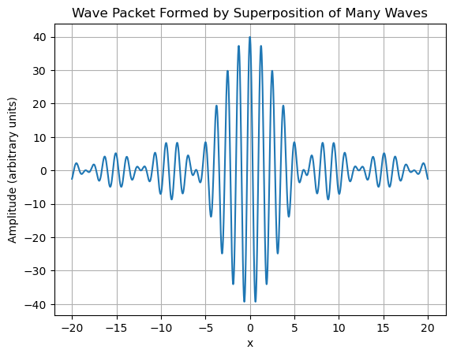
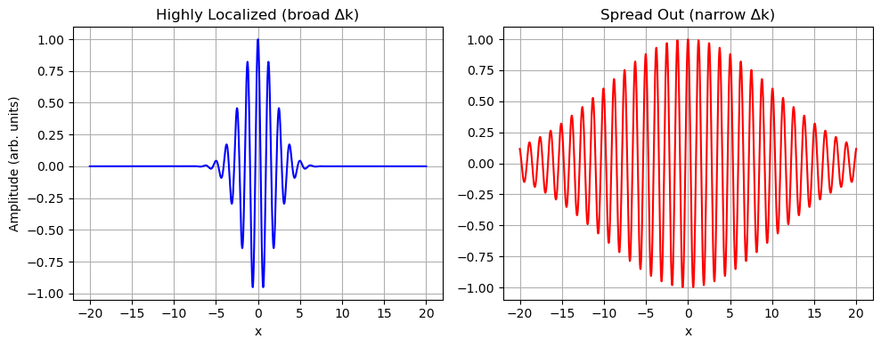

B9.2 Wave Packets#
B9.2.1 Motivation: Why Wave Packets?#
Real Particles Are Not Infinite Waves#
So far, we have described matter as if it were a single, perfect wave extending infinitely through space.
But no real particle behaves like that — real particles are localized, and we need a description that tells us where a particle is likely to be.
Building a Localized Wave#
A single wave cannot describe a localized particle.
Instead, we must combine many different waves to form a short “pulse” or wave packet.
Think of how a sharp sound or a musical beat is formed by mixing many different notes — the same idea applies to matter waves.
Position vs Momentum#
There is a trade-off:
A very localized wave packet requires many different wave components, meaning the particle’s momentum becomes uncertain.
A perfectly single wave has only one momentum but is spread out everywhere.
This is the physical reason behind the Heisenberg Uncertainty Principle.
Why Learn It Now?#
Wave packets are our first step toward describing real particles:
They let us discuss where a particle is likely to be found.
They naturally connect to probability, uncertainty, and later to the Schrödinger equation.
Understanding wave packets changes matter waves from an abstract idea into something we can actually use to describe experiments.
B9.2.2 de Broglie Hypothesis → Matter Waves#
In 1924, Louis de Broglie proposed that particles exhibit wave-like behavior:
Equivalently:
Wavenumber:
Frequency (via energy):
For a non-relativistic particle:
Thus, a free particle of momentum \(p\) can be associated with a matter wave of wavenumber \(k\) and frequency \(\omega\).
Representing a Matter Wave#
A natural way to represent a periodic wave is with a sinusoid or complex exponential:
This is the simplest mathematical form that has:
Wavelength \( \lambda = 2\pi/k \)
Oscillation in time with frequency \(\omega\)
Definite momentum \(p = \hbar k\) and definite energy \(E = \hbar \omega\)
However:
⚠️ A single de Broglie wave extends infinitely in space.
It has a perfectly defined wavelength (momentum), but no well-defined location.
Real particles are detected in some region of space, so we need to build a localized wave packet by combining many such waves.
B9.2.3 From Plane Waves to Wave Packets#
Why a Single Wave is Not Enough#
A single wave corresponds to a perfectly defined momentum.
But because it stretches uniformly across all space, it cannot describe a particle found in a limited region.
Constructing a Wave Packet#
A wave packet is formed as a superposition of many different \(k\) components:
\(\phi(k)\) describes how much of each \(k\) contributes to the packet.
A broader range of \(k\) values → narrower (more localized) packet in \(x\).
A narrow range of \(k\) values → more spread out packet in \(x\).
This is an example of a general Fourier principle: sharp localization in one variable requires many components in the conjugate variable.

Interpretation#
The packet is concentrated near \(x=0\).
Adding more \(k\) components (larger \(\Delta k\)) makes the packet even sharper.
This localization–momentum spread trade-off will lead us naturally to the uncertainty principle in the next topic.
B9.2.4 Group Velocity vs Phase Velocity#
Definitions#
For a single component \(e^{i(kx - \omega t)}\):
Phase velocity:
Group velocity (velocity of the packet’s envelope):
The group velocity corresponds to the particle’s actual motion.
Group Velocity for Matter Waves#
For a free particle:
So:
✔️ Group velocity equals the classical particle velocity.
The phase velocity:
does not represent the particle’s physical speed.
B9.2.5 Localization and Momentum Spread#
Position–Momentum Trade-Off#
Fourier analysis tells us:
Using \(p = \hbar k\):
Small \(\Delta x\) (high localization) → large \(\Delta p\) (high momentum spread)
Large \(\Delta x\) → small \(\Delta p\)
This is the foundation of the Heisenberg Uncertainty Principle we’ll study next.
Visualizing the Trade-Off#

B9.2.6 Summary#
Single de Broglie waves describe definite momentum but no definite position.
Wave packets are superpositions of many \(k\) values, allowing localization.
Group velocity = particle velocity.
Localizing a particle more tightly requires adding more \(k\) components → increases momentum spread.
This trade-off leads directly to the Heisenberg Uncertainty Principle.